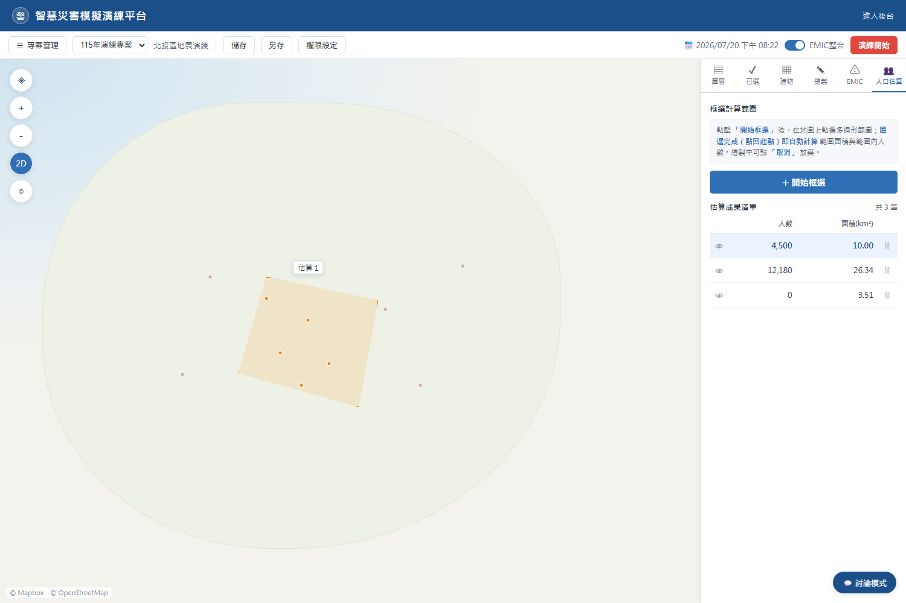
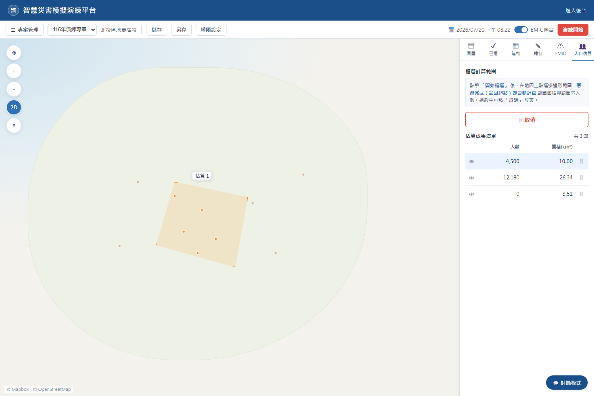
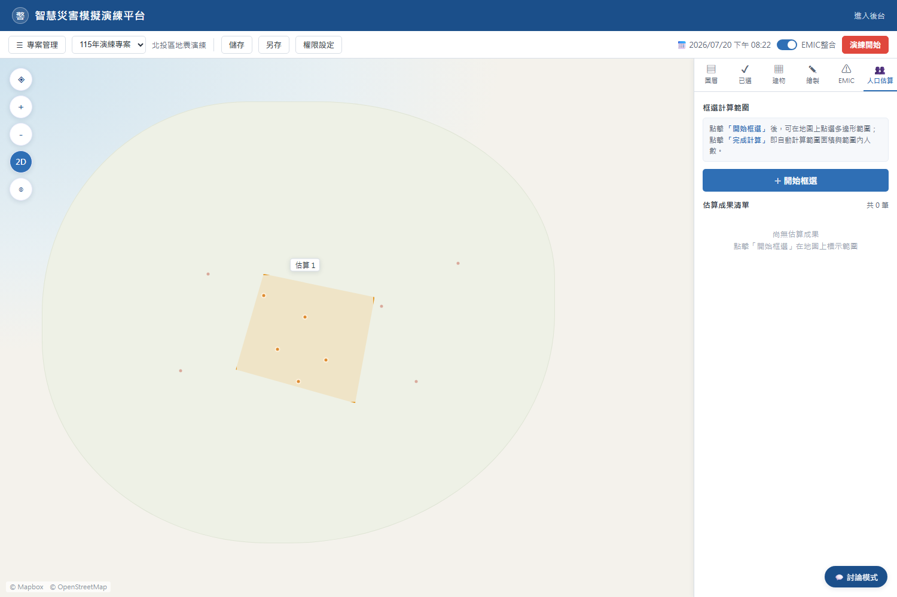
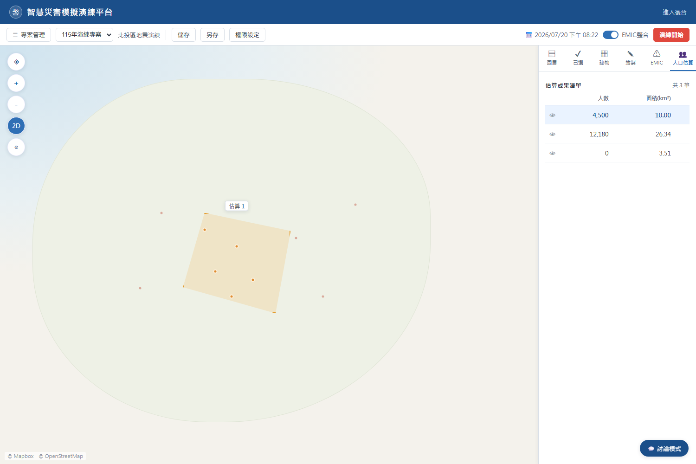

這是災害演練平台右側面板「人口估算」頁籤下的框選工具。使用者在地圖上框選任意多邊形範圍，
系統即算出範圍內人數與面積（v2 已移除密度），逐筆列在成果清單。
本工具沿用既有系統的視覺風格（深藍 header、右側頁籤面板、Mapbox 淺色地圖）， 請以「同一套系統的下一個頁籤」的一致性為前提出圖，不要另立風格。
本工具沿用既有系統的視覺風格（深藍 header、右側頁籤面板、Mapbox 淺色地圖）， 請以「同一套系統的下一個頁籤」的一致性為前提出圖，不要另立風格。
v1 → v2 主要異動（設計請注意）：頁籤名稱由「人口密度」改為「人口估算」；成果清單移除密度欄，只剩人數＋面積(km²) 兩欄。
① 要出什麼

主畫面（人口估算框選工具）
- 右側面板「人口估算」頁籤內容：框選計算範圍說明 → 開始框選 按鈕 → 估算成果清單。
- 成果清單兩欄固定：人數 / 面積(km²)；每列左有顯示/隱藏（眼睛）、右有刪除（垃圾桶）。
- 地圖上框選範圍以多邊形呈現；被點選的那筆改為高亮（下方色票）。

狀態繪製中（單鈕變「取消」）
- 點「開始框選」進入繪製後，同一顆按鈕變成「✕ 取消」（次要外框樣式），面板上沒有第二顆按鈕。
- 使用者在地圖圈選完成（點回起點/雙擊）→ 自動計算、成果入清單、按鈕回「開始框選」。
- 繪製中點「取消」或按 Esc → 放棄本次框選、回初始態。
待設計交付的素材
| 素材 | 用途 | 備註 |
|---|---|---|
| 框選按鈕（單一顆，狀態切換） | 面板唯一按鈕 | 初始「✛ 開始框選」（藍實心）；繪製中變「✕ 取消」（次要外框樣式）。沒有「完成計算」鈕——圈選完成即自動計算 |
| 顯示/隱藏 圖示（👁 睜眼 / 閉眼兩態） | 成果清單每列 | 閉眼＝該範圍在地圖隱藏 |
| 刪除 圖示（🗑） | 成果清單每列 | 點擊後跳二次確認彈窗才刪 |
| 「人口估算」頁籤圖示（👥 人群） | 右側面板頁籤列第 6 個 | 與既有 圖層/已選/建物/繪製/EMIC 圖示同一套風格 |
色票（框選範圍與高亮，請定案）
| 用途 | 暫用色 | 說明 |
|---|---|---|
| 一般框選範圍 | #E39A2B 邊框 / #F3B34D33 填色 | 清單中未選中的成果範圍 |
| 選中高亮範圍 | #E0483D 邊框 / #E0483D22 填色 | 點選清單列時，對應範圍改此色 |
| 面板主色 / 按鈕 | #1B4F8A / #2F6FB5 | 沿用既有系統 |
請設計確認上述配色是否符合既有系統的圖徵色系；框選範圍配色最終以與地圖底圖對比清楚為準。
② 不可以動什麼
以下由需求規格鎖定，設計不可自行增減欄位、按鈕或改文案（少一欄或多一鈕都會讓規格、開發、驗收對不上）：
- 成果清單固定兩欄：人數、面積(km²) —— 不要加回密度欄、不改欄名、不改單位。
- 成果不提供命名欄位 —— 靠點選與地圖範圍連動辨識，不要加名稱輸入框。
- 每列固定兩個操作：顯示/隱藏、刪除（刪除需二次確認）—— 不新增其他列內操作。
- 互動行為固定：點整列→地圖對應範圍高亮、同時僅一列選中；框選採單一按鈕「開始框選↔取消」，圈選完成自動計算、不要加「完成計算」鈕。
- 說明文案：「點擊『開始框選』後，在地圖上點選多邊形範圍；圈選完成（點回起點）即自動計算範圍面積與範圍內人數。繪製中可點『取消』放棄。」
③ 非理想狀態也要出圖

狀態空清單（尚無估算成果）
- 清單區顯示空狀態文案：「尚無估算成果」 + 「點擊『開始框選』在地圖上標示範圍」。
- 不顯示兩欄表頭；「開始框選」按鈕正常可用。

狀態演練完成專案（唯讀）
- 整個「框選計算範圍」區塊都隱藏：標題、「點擊開始框選…」說明文字、開始框選按鈕全部不出現；每列刪除鈕也隱藏。
- 不加任何提示橫幅——面板由「估算成果清單」直接起頭。
- 已存成果仍可點選、在地圖高亮檢視。

狀態演練人員檢視
- 與「演練完成唯讀」畫面完全一致：隱藏整個框選區塊與刪除鈕、無橫幅、無「點擊開始框選…」文字。
- 可檢視清單、可點選高亮，但不能新框選、不能刪除。
- 差別只在觸發原因（此為角色，前者為專案狀態）。
| 其他非理想情境 | 畫面表現 |
|---|---|
| 框選頂點少於 3 即按完成計算 | 不結束繪製，提示「請至少標示 3 個點以圍成範圍」 |
| 框選範圍內無人口（山區/海域） | 正常存一筆，人數欄顯示「0」（非錯誤，不跳提示） |
| 點刪除 | 先跳二次確認「確定刪除此筆估算成果？」，按取消不刪 |
顯示精度已定案（客戶確認）：面積小數 2 位、人數四捨五入整數；此為數值格式，不影響版面。